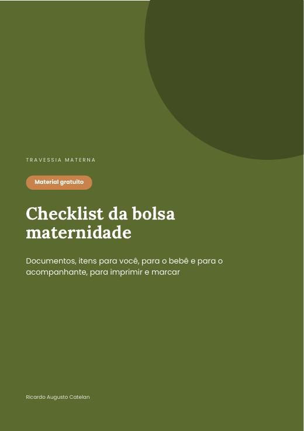

Documentos, itens para você, para o bebê e para o acompanhante, em uma lista para imprimir e marcar.
Baixar grátis (PDF)
Sem cadastro. PDF de 6 páginas para imprimir ou usar no celular.

Ver todos os guias da coleção